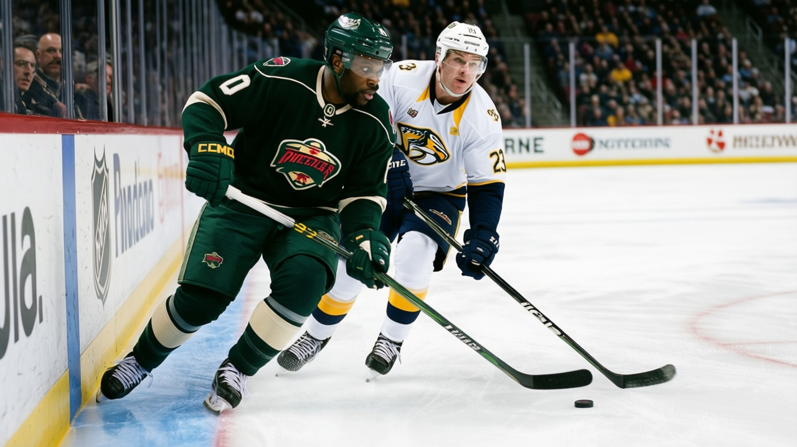

PROFIT KING, LOSING KING: MINNESOTA MADE $32.57 MILLION. THE ROSTER COST $29.97. THE PRODUCT IS GARBAGE.
The most profitable franchise in hockey spent less than anyone, won 12 games, and still took your $80.
 Mickey "The Mick" DonnellyColumnist, ex-goalie · The Penalty Box
Mickey "The Mick" DonnellyColumnist, ex-goalie · The Penalty Box
The Minnesota Wild front office

The  Minnesota Wild made more money than any other club in the league this year. $32.57 million in profit. That is first in hockey. Ahead of
Minnesota Wild made more money than any other club in the league this year. $32.57 million in profit. That is first in hockey. Ahead of  New Jersey Devils, ahead of
New Jersey Devils, ahead of  Toronto Maple Leafs, ahead of every blue-chip operation with a $67M payroll.
Toronto Maple Leafs, ahead of every blue-chip operation with a $67M payroll.
They spent $29.97 million on their roster. That is the lowest in the league. They have 29 points through 37 games. They are 6-14 at home. You are paying $80 to watch this.
$32.57 million of profit on a $29.97 million payroll. The front office is a gold mine and the hockey department is a joke. The revenue line reads $53.59 million. That is fifth in the league. Minnesota is out-revenueing  Phoenix Coyotes,
Phoenix Coyotes,  Columbus Blue Jackets,
Columbus Blue Jackets,  Los Angeles Kings,
Los Angeles Kings,  Philadelphia Flyers. People are buying tickets. People are buying hot dogs. The building works. The roster does not.
Philadelphia Flyers. People are buying tickets. People are buying hot dogs. The building works. The roster does not.
The coach can't sort his own defense
Here is where I get angry beyond the money. The League Scouting Bureau has Yury Salei64 rated 60. The Wild play him on the second pair, right side.  Willie Mitchell70 rates 66 and plays the third pair.
Willie Mitchell70 rates 66 and plays the third pair.  James Patrick70 rates 66 and plays the fourth pair. Patrick kills penalties and faces third-pairing competition. Salei, a 60, is out there in a top-four role.
James Patrick70 rates 66 and plays the fourth pair. Patrick kills penalties and faces third-pairing competition. Salei, a 60, is out there in a top-four role.
You can talk about chemistry all you want. I stopped buying that at 22 when I was playing behind a 60 rated ahead of two 66s and losing games on third-period odd-man rushes. The coach sits two better defensemen to play a worse one. That is not a style preference. That is a decision with a 6-point cost attached to it every night.
No one scores, no one gets the ice
No Minnesota player appears in the top 30 scorers in this league. Not one. The team has 117 goals in 37 games against 143 allowed. That is a minus-26 goal differential. Their club average of 89.8 on the Morale Scale tells you nobody has walked out yet, which means nobody has raised the floor either.
Johan Holmqvist70 carries the highest morale in hockey at 100. He has not played. The backup goalie is the happiest man in the building. That is not a culture. That is a parking lot.

The attendance math you deserve
13,553 per game. At $80 a seat. The per-point cost of this roster is $1.03 million, which sounds efficient until you realize the points aren't coming. You cannot sell efficiency. You can only sell wins.
Phoenix got a column last week for 12,092 seats and a league-worst 108 goals. Minnesota is 117 goals in 37 games against 143 allowed, a minus-26 differential. Phoenix is minus-24 in 36. Minnesota is cheaper, worse, and still profitable.
The room is not gone. The room is fine. The roster is $29.97 million of air and the coach cannot sort four defensemen from five. The front office made $32.57 million and nobody in that building cares if you go home happy. You went home with a receipt and a minus-26 on the board. You paid $80.